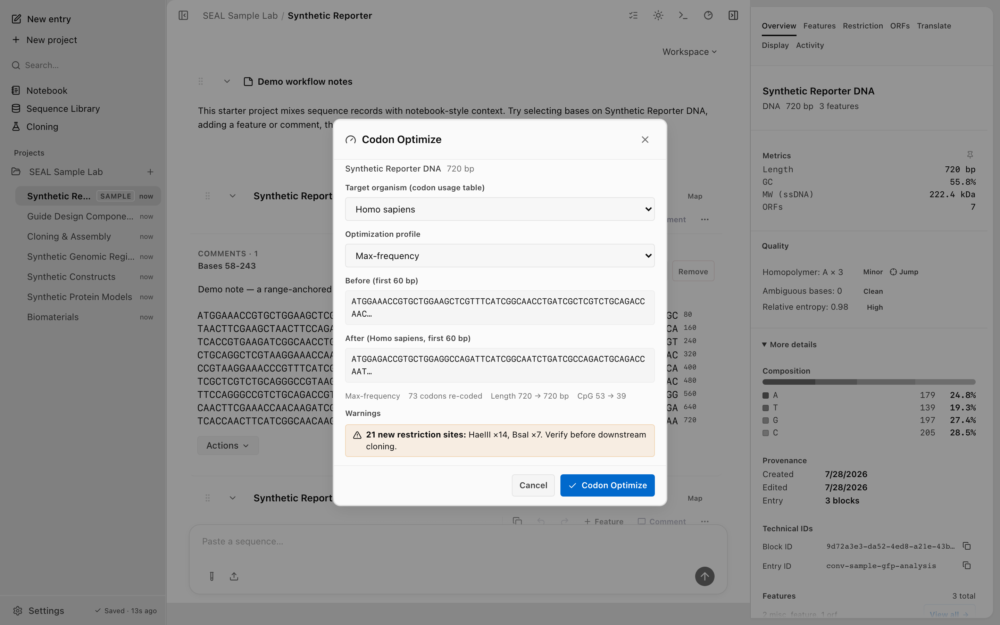

Codon analysis
Screenshots and recordings show the direct edition. Compare editions.
Inspect codon usage, GC content, and host comparison for a coding sequence. This page covers reading an existing CDS. To create a nucleotide draft from a protein, start with reverse translation; to recode an existing CDS for a host, see Codon optimizers.
Codon usage
Run seal codons to count every codon in a sequence and compute per-amino-acid frequencies. The command always reads frame 0 from the start of the sequence. Output is grouped by amino acid, most-used codons first, with stop codons reported last.
seal codons myseq.faThe sequence can come from an argument, a file path, the --file flag, or stdin. RNA input is accepted and normalized to DNA before counting.
echo ATGAAATAG | seal codonsChoose the output with --format. The default table is human-readable, with a bar showing each codon's relative frequency within its amino acid. json and tsv are for scripting.
| Format | Output |
|---|---|
table | Grouped by amino acid with a frequency bar. Default. |
json | An object with totalCodons and a codons array. |
tsv | Header row plus one row per codon: codon, amino_acid, count, fraction. |
seal codons ATGAAATAG --format jsonEach JSON entry carries the codon, its single-letter aminoAcid (* for stops), the raw count, and the fraction of that amino acid's codons it accounts for.
{
"totalCodons": 3,
"codons": [
{ "codon": "AAA", "aminoAcid": "K", "count": 1, "fraction": 1.0 },
{ "codon": "ATG", "aminoAcid": "M", "count": 1, "fraction": 1.0 },
{ "codon": "TAG", "aminoAcid": "*", "count": 1, "fraction": 1.0 }
]
}Entries are sorted alphabetically by amino acid, stop codons last, then by descending count within each amino acid. The fraction is the usage share within one amino acid, so the fractions for a given amino acid sum to 1.
GC content
For GC content on its own, use seal info. It reports the name, sequence type, length, GC content, format, and validation status.
seal info myseq.fa --jsonThe info JSON returns gcContent as a raw fraction from 0 to 1, and null for protein input.
{
"name": "myseq",
"sequenceType": "dna",
"length": 8,
"gcContent": 0.5,
"format": "fasta",
"valid": true,
"invalidChars": []
}To get GC content alongside composition, molecular weight, melting temperature, ORFs, and restriction sites in one call, run seal analyze. There gcContent and atContent are formatted as percentage strings, such as "52.38%".
seal analyze myseq.fa --jsoninfo reports gcContent as a 0 to 1 fraction; analyze reports it as a percentage string. Read the field in the format the command emits rather than assuming one shape. See the IO contract for both.
Host comparison
To compare a sequence's codon usage against a target host, score its Codon Adaptation Index (CAI) with seal optimize --cai. CAI scores how closely the existing codons match the host's preferred codons, on a 0 to 1 scale. Pick the host with --organism. The CLI accepts ecoli, human, and yeast.
seal optimize myseq.fa --organism ecoli --cai
The host codon usage tables come from the same registry the optimizer uses. For the list of built-in hosts (ecoli, human, yeast, pichia, sf9, cho, bsubtilis) and how the host table, genetic code, and strategy are separated, see Codon optimizers.
To read both sequences side by side, compare the codon usage of the original and a host-matched version. Run seal codons on each, or rewrite the CDS first and compare the result.
seal codons myseq.fa --format tsv > before.tsv
seal optimize myseq.fa --organism ecoli | seal codons --format tsv > after.tsvOver the CLI
The codon-analysis commands are stateless: they read a sequence and print a result. Pipe them together or into other tools.
| Command | What it returns |
|---|---|
seal codons | Per-codon counts and per-amino-acid frequencies. |
seal info | Name, type, length, GC content, format, validity. |
seal analyze | GC and AT content, composition, molecular weight, Tm, ORFs, sites. |
seal optimize --cai | A host-optimized CDS plus its CAI against the host. |
Every command here accepts a sequence argument, a file path, or stdin, and most support --json for machine-readable output. The codons command uses --format json instead.
cat cds.fa | seal codons --format json | jq '.codons[0]'CAI, host tables, reverse translation, and codon optimization provide host-profile comparisons and nucleotide drafts. Review the generated sequence against the selected host profile and synthesis requirements.
For the exact field shapes across the CLI, MCP, and the app, see the IO contract. For the full command list, see the CLI reference.